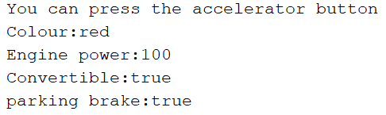
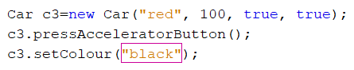
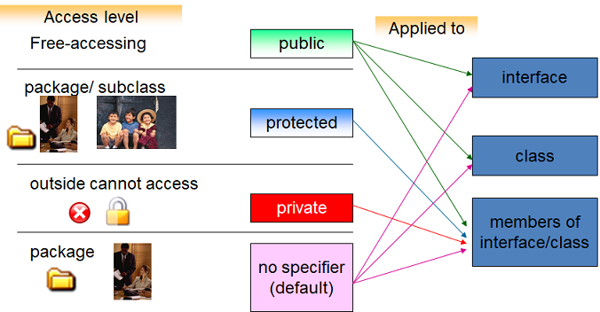

Class and Object
ClassIn the previous topic, we saw the term “class” but did not give enough consideration to its meaning. Now we can establish a useful definition:
[see class definitions on the w3schools page ]
[see class definitions from other authors]
A key task in producing an OO design and program is therefore the identification and selection of the most appropriate organisational units. There is no single OO solution for any specific problem, there are just “good” ones and everything else. So we need to establish a set of principles that will help us understand what makes for a “good” choice of an organisational unit or class. We will find that if we choose wisely, our programming task is relatively straightforward. Choose poorly, and our software may be difficult to deliver, hard to maintain and ultimately not a useful solution to our problem - just like an office with poor internal organisation. We can draw on our analysis from the previous section. A good class would exhibit the following characteristics:
So whenever we want to create an OO program, we should give thought to the notion of OO design and think about what classes or entities we need to create, using the principles of high cohesion, low coupling and encapsulation as our guide.
A formal definition of a class includes two key components: Fields(Attributes) and Methods(Behaviors)
This is a good time to start.
Design guideline:
- Step 1: Looking for main nouns, classes are ofter described by main nouns in the problem.
- Step 2: Looking for auxiliary nouns that describe details of the main noun, Fields or Attributes are often described by auxiliary nouns.
- Step 3: Looking for verbs, methods or behaviors are often described by verbs.
- Step 4: Find the relationship among classes. TIPS: If your problem has two main nouns. They have often the relationship.
Apply the guideline above for the problem
We use Unified Modeling Language(UML) to describe the class structure. UML provides mechanisms to represent class members, such as attributes and methods, and additional information
Read this article to get more about UML
A UML class diagram is used to represent the Car class
How to draw the class structure?
- put main noun(Car) to make the class name
- put auxiliary nouns(nouns describe the detail of Car) to make fields
- put verbs to make methods
- To specify the visibility of a class member from other classes (i.e. any attribute or method), these notations(-,+,#,~) must be placed before the member's name. (In Java, '~' is replace to ' '). get more notations
Now, You will implement this class in Java. In your editor, create a new file named Car.java(Note: the file named the same as the class name). The code of Car class:
Let's analyze the file Car.java
At line 1, Using public keyword to the class Car is visible anywhere in the app. Using the private keyword to fields are restricted accessibly from the other classes. When the program compiles and runs, the Java system will perform some steps:
- Step 1: The compiler will generate automatically the method :
and insert into the Car.java. Don't worry about this, later we will discuss it. - Step 2: Load the Car class definition to static heap. In the figure below, the address 500 is used to store this. The compiler creates also a table that contains all function prototypes and the addressed of the implemented code.
- Step 3: Allocate the space memory for the method main in the stack memory. The reference variable c stays in here.
- Step 4: the instruction new Car() will be called to allocate the block memory in the dynamic heap( the address 2000 is an example). The block size is based on the Car class definition. Inside, it contains all fields/instance variables that are declared in the Car class and the address of the Car definition. And then, the Java used the variable c to invoke the method Car() for assigning default values to these fields/instance variables of c. Now, this block is called to be Object. The address of the block will is assigned to the vaiable c. c is used to handle the object
- To run c.pressStartButton();, the Java system begins from c, gets the address 2000, jumps to 2000, gets the address 500, jump to the table of prototypes, finds the method "pressStartButton", jump to 120 and runs the code. The instruction c.pressAcceleratorButton() is the same. (Note: all variables in the method pressAcceleratorButton() are fields in the block 2000. Using c to call the method, therefore all fields belong to c.)

Now, you add more the code to the method main.
The code "Car c2=new Car()" creates the second object from the Car class. The second object also contains all fields as the first object. This time, Java use c2 to inkove the method Car() to assign default values to fields of c2.
The line "c2.pressAcceleratorButton();" calls the method. Now, all fields in this method belong to c2
In the example above, we used the keyword new to allocate the block memory in the dynamic heap. This block memory ia called the object or the instance of class. This object is create from the Car class and it contains all fields of this class.
Why do we have to create objects?
Any program contains also data and tasks. Data in the OO program is showed as objects. Therefore, to the OO program operate, we have to create objects. Through these objects we can invoke or perform tasks
Come back the example above. The first object (at the address 2000) and second object( at the address 3000) are storing the same default values because both c and c2 invoke the template method Car() {...}
Constructor
Complete encapsulation requires a mechanism for initializing data members at creation-time. Without initialization at creation-time, an object's data members contain undefined values until client code calls a modifier that sets that data.
The example above, the special method Car(){...} is inserted to the file Car.java. It is called the default constructor. Therefore, all fields of c or c2 are assigned to empty values. Values are called the state of object. Initializing an object's instance variables in a constructor ensures that the object has a well-defined state from the time of its creation.
The default constructor takes its name from the class itself. The prototype for this no-argument constructor takes the form ClassName()
Overloading Constructors
Overloading a class' constructor adds communication options for client code. Client code can select the most appropriate set of arguments at creation time.
Add more the code to the Car.java

This method is called the constructor with parameters
Add the code to the method main
In the above code, the third object c3 is created and c3 invokes the constructor with parameters. All fields of c3 are assigned as {"red", 100, true, true}
Because c3 inkoves pressAcceleratorButton(), The state of c3 is printed out.

All methods that are implemented in the Car class at the time are called member methods/functions
The current Object
When run "c1.pressAcceleratorButton();", c1 invokes the method => the object (is handled by c1) is the current object at the time
When run "c2.pressAcceleratorButton();", c2 invokes the method => the object (is handled by c2) is the current object at the time.
This
The keyword this returns the address of the current object. That is, this holds the address of the region of memory that contains all of the data stored in the instance variables of current object.
Scope of this: This is created and used just when the member method is called. After the member method terminates this will be discarded
[see more]
for example, c3=new Car("red",100, true, true);

Upon entering the constructor with parameters, the pointer this is created by Java and it is storing the address of the object (4000). c3 and this are pointing to the current object . Using this in here to distinguish local variable and instance variable/field. After assigning values of input parameters to instance variables of c3, this will be discarded
Member functions
Member functions are the functions, which have their declaration inside the class definition and work on the data members of the class.
At the time, the Car class contains member funtions as:

After an object is created and assigned default values. Now, if you want to set one instance variable to other value. for example, change only one instance variable colour of c3 to 'black'. What solution for this case?
It's OK, we will add more a method setColour() to the Car class design. The code as:
The main code:
the pointer c3 invokes setColour("black"). Therefore, at the time this.Colour=... is used to access to instance variable of c3
The same above idea, if you want to get the value of one instance variable you should add more a method getColour()
You can also add more other getters/setters. The completed code:
public class Car {
//fields
private String Colour;
private int EnginePower;
private boolean Convertible;
private boolean parkingBrake;
//methods
public Car(){
Colour="";
EnginePower=0;
Convertible=false;
parkingBrake=false;
}
public Car(String Colour, int EnginePower, boolean Convertible, boolean parkingBrake) {
this.Colour = Colour;
this.EnginePower = EnginePower;
this.Convertible = Convertible;
this.parkingBrake = parkingBrake;
}
public void pressStartButton(){
System.out.println("You can press the star button");
}
public void pressAcceleratorButton(){
System.out.println("You can press the accelerator button");
System.out.println("Colour:"+ Colour);
System.out.println("Engine power:"+ EnginePower);
System.out.println("Convertible:"+ Convertible);
System.out.println("parking brake:"+ parkingBrake);
}
public void setColour(String Colour) {
this.Colour = Colour;
}
public String getColour() {
return Colour;
}
public int getEnginePower() {
return EnginePower;
}
public void setEnginePower(int EnginePower) {
this.EnginePower = EnginePower;
}
public boolean isConvertible() {
return Convertible;
}
public void setConvertible(boolean Convertible) {
this.Convertible = Convertible;
}
public boolean isParkingBrake() {
return parkingBrake;
}
public void setParkingBrake(boolean parkingBrake) {
this.parkingBrake = parkingBrake;
}
public static void main(String[] args) {
Car c=new Car();
c.pressStartButton();
c.pressAcceleratorButton();
Car c2=new Car();
c2.pressAcceleratorButton();
Car c3=new Car("red", 100, true, true);
c3.pressAcceleratorButton();
c3.setColour("black");
System.out.println("Colour of c3:" + c3.getColour());
}
}
Output:
You can press the star button You can press the accelerator button Colour: Engine power:0 Convertible:false parking brake:false You can press the accelerator button Colour: Engine power:0 Convertible:false parking brake:false You can press the accelerator button Colour:red Engine power:100 Convertible:true parking brake:true Colour of c3:black
Package
A package is a namespace that organizes a set of related classes and interfaces. Conceptually you can think of packages as being similar to different folders on your computer.
Because software written in the Java programming language can be composed of hundreds or thousands of individual classes, it makes sense to keep things organized by placing related classes and interfaces into packages.
[see more at Oracle]
[see more at other page]
Creating a package
To create a package, you choose a name for the package and put a package statement with that name at the top of every source file that contains the types (classes, interfaces, enumerations, and annotation types) that you want to include in the package.
The package statement (for example, package mypkg;) must be the first line in the source file. There can be only one package statement in each source file, and it applies to all types in the file.

[read more]
Access modifier
To specify the visibility of a class member (i.e. any attribute or method), we use:
- private: -
- public: +
- protected: #
- default: if don't any notation, it is treated as default
these keywords are called access modifier

Let's understand the access modifiers in Java by a simple table.

private:
The private access modifier is accessible only within the class.
We cut the method main in the file Car.java. Paste it to the other file named Tester.java.
public class Tester {
public static void main(String[] args) {
Car c=new Car();
c.pressStartButton();
c.pressAcceleratorButton();
Car c2=new Car();
c2.pressAcceleratorButton();
Car c3=new Car("red", 100, true, true);
c3.pressAcceleratorButton();
c3.setColour("black");
System.out.println("Colour of c3:" + c3.getColour());
//access the instance variable Colour of c
c.Colour="Gray"; // error
}
}
In the method main, Using c.Colour="Gray" will cause an error because it is private data. Also , all private members can not access from other classes
public
The public access modifier is accessible everywhere.
In the above example, the Car class is public to can use it everywhere. In the Tester.java, we can also access to public methods.
default
If you don't use any modifier, it is treated as default by default. The default modifier is accessible only within package. It cannot be accessed from outside the package. It provides more accessibility than private. But, it is more restrictive than protected, and public.
Edit the file Car.java
package A;
public class Car {
//fields
private String Colour;
private int EnginePower;
private boolean Convertible;
private boolean parkingBrake;
...
void pressStartButton(){
System.out.println("You can press the star button");
}
}
Edit the file Tester.java
package B;
import A.Car;
public class Tester {
public static void main(String[] args) {
Car c=new Car();
c.pressStartButton(); // error
c.pressAcceleratorButton();
Car c2=new Car();
c2.pressAcceleratorButton();
Car c3=new Car("red", 100, true, true);
c3.pressAcceleratorButton();
c3.setColour("black");
System.out.println("Colour of c3:" + c3.getColour());
}
}
Because the method pressStartButton() is default, in the method main we can not invoke this.
protected
The protected access modifier is accessible within package and outside the package but through inheritance only.
[the link to get demo ]
Summary
- Encapsulation is a way of packaging data and methods together into one unit. [read more]
- To achieve encapsulation, declare fields as private
- Provide public get and set methods to access and update the value of a private variable
- The constructor is a special member function that an object invokes at creation time, the name of the constructor is the name of the class, not have return types
- The compiler inserts an empty body constructor into any class definition that does not declare a constructor
- The current values are storing in instance variables of a object is called the state